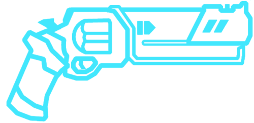
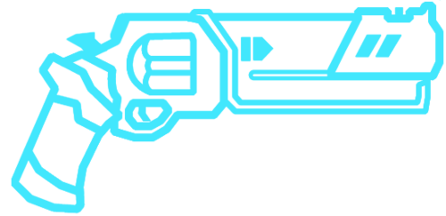
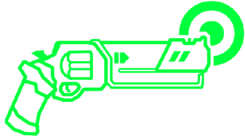
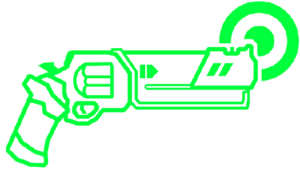
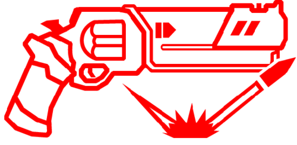
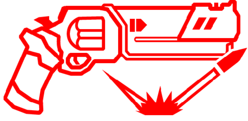

The piercer is the most basic gun in the game, possessing a regular left click shot that does from 1 to 2 damage depending on what an enemy spot was hit. This weapon also has an alt fire in the form of a charged shot that does 2 damage and pierces up to three enemies. However, it doesn't really have any interesting properties on its own. It is, however, useful when combined with other weapons like the marksman for an ultraricoshot which can deal a lot of single target damage with the charged shot, but even that is rarely used. Instead, people will much prefer to use the alt piercer, aka slab piercer as soon as it is unlocked in 1–4 for its higher based damage of 2, no matter what enemy's spot is hit, a more powerful piercing shot even it both looks and sounds way cooler than the default. To get this cooler older brother of a gun, however, you will need to click on all four stone slabs (hence the name) that are found throughout the limbo layer. In the community, the default piercer is often meme'd on and used in the mayo% speedrun category based on a review of Ultrakill from underthemayo, an uninformed and dumb reviewer who cries over every game that isn't doom eternal. in his Ultrakill review, he criticized the game for not insisting players to use other guns than the default piercer as you can beat it all without having to use other guns or weapons, completely missing the point that playing that game that way is stupid, not fun and inefficient but no matter to him because he is always right.
 

The marksman is often touted as the best weapon in the game for its strong pairing with other weapons with its alt fire. It is unlocked whenever the player spends the 7.5k points at the terminal to unlock it with no other requirements. The left click shot is the same as the piercer like all revolvers even with the slab marksman, however, that is not what is interesting about it. Instead, the alt fire consists in shooting coins into the air that when shot with a hitscan weapon will immediately target the nearest enemy weakpoint and adding a flat damage bonus. With the default gun, this shot can be split if the coins are shot right when it flashes or when it starts singing from being in the air for long enough. With the slab variant, the shots no longer split instead of instantly resetting the weapon fire cooldown for all slabs revolvers if, again, the timing on the shot is correct. Now flat damage bonuses don't sound very cool on their own; however, combined with other weapons, it becomes lethal. the best example of this power is through a railcoin where you take an enemy, toss 2 coins behind it, shoot them with your railcannon and toss the 2 last coins for a total of 27 damage, a more situational use of the marksman is with the tripleslarpwhipcoinpunch a complex strategy that can deal over 32 dmg if executed well enough, this is very good in combination with a deadcoin for the initial burst of damage which renders the damage potential of this attack virtually infinite if you are given an infinite amount of time, though the dialogue before the boss fights that would actually require such a setup give you more than enough time to deadcoin and get yourself into position for the tripleslarpwhipcoinpunch after the deadcoin has been setup enough. There is essentially no limit to the marksman coins as it only needs a hitscan shot to be used. Finally, the coins can be used to conduct electricity but that will be detailed in the jumpstart section [insert link here maybe?].
 

The Sharpshooter is the last of the pistols that is unlocked in the terminal for 25k points, making it harder to get when starting out as a new player because you most likely won't have that number of points until later in the game. The left click fire just does from 1 to 2 dmg like the other weapons, and the corresponding slab attack is the same as the other two pistols. The point of the marksman is, again in its alt fire. On the basic sharpshooter, you get three red shots that recharge over [insert time to charge here], these shots can bounce off walls to target the nearest enemy weakpoint and explode projectiles creating a red explosion [also have a page about this?] Amounting to great damage. The downside of this attack is the spin uptime as you need to have your right click pressed down to start the charge up of the gun. this spin-uptime is solved with the slab version which while it may only have one shot, is more powerful, doesn't require spin uptime at all and stops targeting enemy weakpoints and while this sounds bad, it actually helps in dealing more consistent damage as the shot stays straight, and it allows you to, you maybe guessed it, stack coins onto the shot to reset the total amount of bounces of the shot which makes it great at both single and multi target damage. As talked about in the marksman, the sharpshooter is a part of the most complex single weapon strategy in the game: the tripleslarpwhipcoinpunch. This attack uses the bounce resetting property of coins to continually pierce an enemy twice per round. to set it up, first you take a large enemy, move back and while you are moving back, fire a coin, the moment it is fired, move back forward to punch it into the enemy in front, then aim at the ground with the slab marksman, fire a shot, look back at the enemy and punch the coin that should have reached knee height by now, go to the side and use the grapple to juggle coins upwards, jump to punch the coin into the enemy, slam back down and repeat until you have run out of coins.